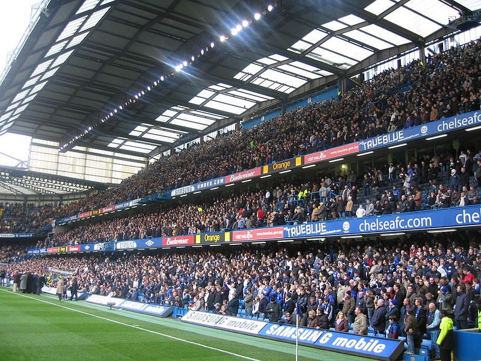

El Chelsea Football Club conocido simplemente como Chelsea, es un club de fútbol profesional de Inglaterra con sede en el distrito de Fulham, Londres, que disputa actualmente la Premier League, máxima competición futbolística de ese país. Fundado el 10 de marzo de 1905. Disputa sus partidos como local en el estadio de Stamford Bridge, el cual tiene una capacidad para 41 000 espectadores, y en el que ha disputado sus encuentros como local desde su fundación.
Como uno de los clubes más laureados del fútbol inglés, el Chelsea tuvo su primer momento de éxito en 1955, cuando ganó su primer campeonato de liga, y posteriormente consiguió otras importantes competiciones de copa durante los años 1965 y 1990. El club ha tenido su mayor y más importante período de éxito en las últimas dos décadas, ganando un total de 22 trofeos oficiales desde 1997.4A nivel nacional, ganó seis campeonatos de liga, ocho FA Cups, cinco Football League Cups y cuatro Community Shields. En el ámbito europeo y mundial, ha obtenido dos Liga de Campeones de la UEFA, dos Ligas Europa de la UEFA, dos Recopas de Europa, dos Supercopa de Europa y una Copa Mundial de Clubes dando un total de 9 títulos internacionales, lo que lo convierten en el segundo equipo inglés en el palmarés, tras el Liverpool F. C.
El Chelsea FC es propietario del estadio Stamford Bridge. El estadio Stamford Bridge está ubicado en el distrito de Hammersmith en Fulham y fue aperturado el 26 de abril de 1877. El estadio Stamford Bridge es conocido coloquialmente por los seguidores del Chelsea Football Club como “The Bridge”, y cuenta con una capacidad para más de 41 mil espectadores, lo que lo ubica en el tercer lugar dentro de Londres, después del Emirates Stadium y el Estadio de Wembley. El estadio Stamford Bridge se encuentra dentro de la lista de los diez estadios con mayor capacidad de la Premier League y ha sido sede de importantes eventos deportivos como Premier League FA Cup, Football League Cup y Liga de Campeones de la UEFA.
Kai Havertz (2020-2023):
El delantero alemán llegó hace poco años al Chelsea pero rápidamente se metió en la historia grande del club por la importancia de su rendimiento. No solo marcó en la final de la Champions League para vencer al Manchester City de Pep Guardiola, sino que también convirtió frente al Palmeiras para que ganar el primer Mundial de Clubes de la institución. Está claro que recién tiene 23 años, pero ya lleva 28 goles y 12 asistencias en 116 partidos con la camiseta azul.

Cesar Azpilicueta:2012-2023
El caso del defensor español es bastante particular porque a lo largo de toda su carrera en el Chelsea, ha ocupado cada posición de la defensa. Esto le ha permitido ganarse un lugar de privilegio dentro del club, ya que ha capitaneado al equipo en cada temporada. Azpilicueta lleva 497 partidos jugados en el Chelsea y ganó 2 Premier Leagues, 1 Copa de la Liga, 1 Fa Cup, 2 Europa Leagues y 1 Champions League.

Didier Drogba (2004-2012 2014-2015)
El delantero marfileño es uno de los futbolistas más trascendentales en la historia del Chelsea debido a que fue el líder del equipo en la Champions League del 2013. El atacante marcó goles muy importantes en dicha competencia para que los ingleses pudieran festejar. Además, en su retorno en 2014, Drogba demostró que seguía siendo un gran jugador debido a que fue clave para ganar la Premier League. En total, el africano ganó 3 Premier Leagues, 4 FA Cups, 1 Copa de la Liga, 2 Community Shields y 1 Champions League.